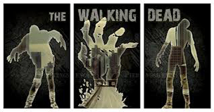
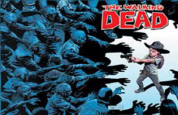

About the Show
The Walking Dead, the most watched drama in basic cable history, returns for another terrifying and exhilarating season on Sun., Oct. 13 at 9/8c. A 16-episode season of the series which the The New York Post gave 4 stars will air in two-parts with the first eight hours kicking off Oct. 13. The second eight episodes will return Feb. 2014.
In this highly anticipated new season, we see Rick and the group of survivors fostering a thriving community in the safe haven of the prison. Sadly, in this brutal world, happiness is short-lived and walkers and outside threats are no match for danger brewing inside the fences. The group's home and new way of life will be thoroughly tested, and their struggle to survive has never been so perilous. Season 4 also introduces several new characters including Bob Stookey (Lawrence Gilliard Jr., The Wire).
Based on the comic book series written by Robert Kirkman and published by Image Comics, The Walking Dead stars:
The series is executive produced by Scott M. Gimple, Robert Kirkman, Gale Anne Hurd, David Alpert, Tom Luse and Greg Nicotero.
